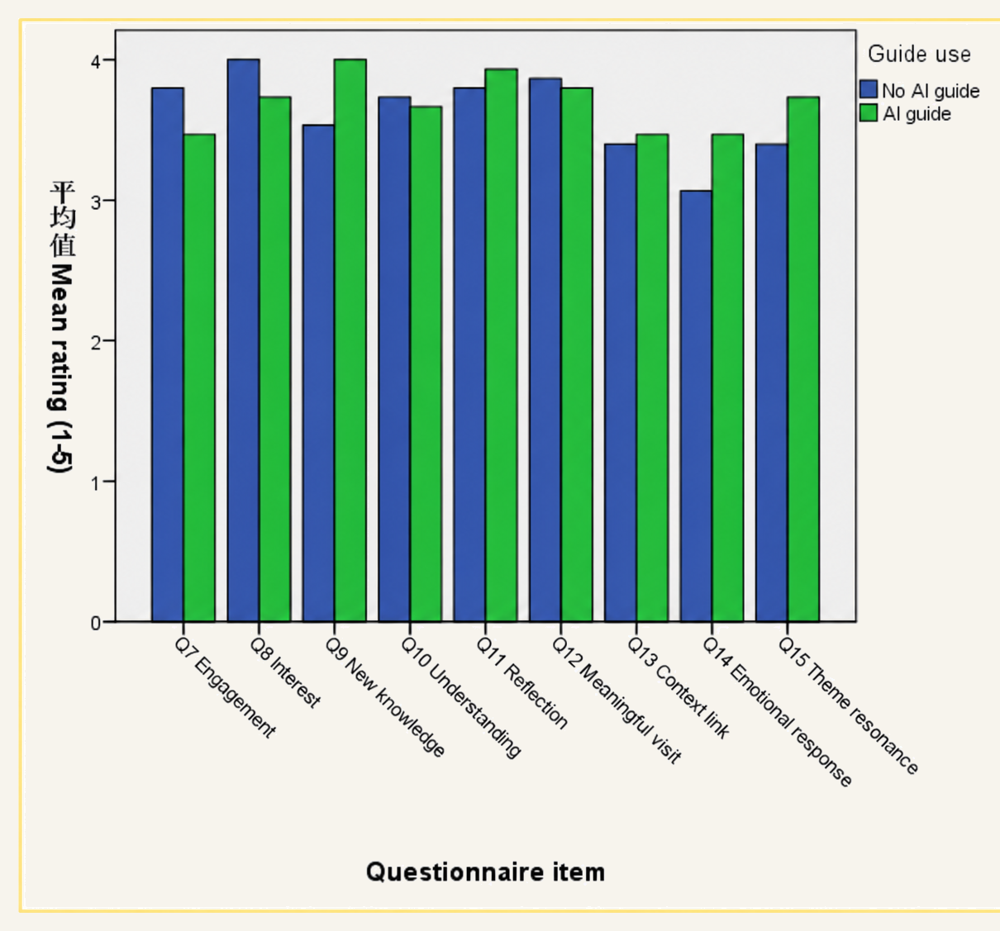

XJTLU Museum | AI-guide evaluation | Group H
Evaluating the XJTLU Museum AI guide
Thirty students visited the XJTLU Museum with either an AI guide or exhibition labels alone. The study measured nine post-visit outcomes: engagement, interest, new knowledge, understanding, reflection, meaning, context, emotion, and theme resonance. We compared ordinal ratings with Mann-Whitney U tests and applied Holm correction across nine comparisons. No item reached significance after correction. New knowledge showed the clearest descriptive signal, with an AI mean of 4.00 and a labels-only mean of 3.53. Engagement and interest were lower in the AI group. These findings do not establish equivalence or a causal effect. They identify learning support as a plausible strength and engagement as the main design gap. The recommendations target sourced answers, a short visit route, contextual interpretation, and recovery controls.
Cheng Qian 2687280 · Chen Cui 2687288 · Ziqian Wang 2684921 · Simu He 2686299
Xi'an Jiaotong-Liverpool University · XJTLU Museum · 2026Do nine post-visit ratings differ between students who used the XJTLU Museum AI guide and students who toured with labels only?

AI guide and labels-only visit
17 undergraduate and 13 postgraduate
Q7-Q15, 1-5 ordinal scale
Valid item ratings, no missing values
01 Introduction & background
Museum-guide studies show that format and interaction shape which visitor outcomes improve. Wang and Matviienko [1] compared a generative chatbot with a museum app. Tue et al. [2] found that conversational access helped content discovery but often made questions harder to frame. Xia et al. [3] linked guide wording to satisfaction, return use, and recall. Othman et al. [4] separate engagement, learning, meaning, and emotion. Reviews also find that museum chatbot projects describe systems without measuring visitor experience [5].
The mixed pattern points to interaction, not AI presence alone.
The review separates guide delivery from measurement quality.
02 Study design
The same five checkpoints applied to both visit conditions.
Participants were 17 undergraduates and 13 postgraduates. The team did not manipulate route, device, or time on task, and these variables were not logged.
Each participant entered one condition and rated one visit. The analysis therefore describes the delivered visit.
The design did not include a within-person comparison.
03 Variables
- IV
- Guide condition: AI guide or labels-only visit.
- DV
- Engagement, interest, new knowledge, understanding, reflection, personal meaning, context connection, emotional response, and theme resonance. Each item uses a 1-5 ordinal scale.
- BG
- Role, visit frequency, and AI-tool use were recorded as background data.
- CV
- No control variables entered the analysis; the 15-per-group sample limited adjusted modelling.
Scale anchor. 1 = strongly disagree and 5 = strongly agree. All 270 item ratings were valid.
No covariate-adjusted model was used.
04 Results & inference

| Background | AI | No AI |
|---|---|---|
| Role | ||
| Undergraduate | 7 | 10 |
| Postgraduate | 8 | 5 |
| Prior visits | ||
| First visit | 8 | 6 |
| 2-3 visits | 6 | 5 |
| Regular visitor | 1 | 4 |
| AI-tool use | ||
| Almost never | 2 | 1 |
| Occasionally | 4 | 10 |
| Weekly | 4 | 2 |
| Almost daily | 5 | 2 |
Two-sided Mann-Whitney U tests [6] with Holm correction [7] across nine ratings. Positive Z favours no AI; negative Z favours AI. Kerby's rank-biserial direction guides interpretation of that sign [8].
AI means were higher on five items. Q9 new knowledge showed the largest descriptive gain (+0.47), while engagement and interest favoured no AI. No raw or adjusted p-value fell below .05.
Q9 is the clearest hypothesis for replication. The sample does not establish equivalence or causality; the next study needs verified allocation and task-level evidence.
05 Test results
| Item | Δ | Z | Raw p | Holm p |
|---|---|---|---|---|
| Engagement | -0.33 | +1.084 | .278 | 1.000 |
| Interest | -0.27 | +0.978 | .328 | 1.000 |
| New knowledge | +0.47 | -1.199 | .230 | 1.000 |
| Understanding | -0.07 | +0.248 | .804 | 1.000 |
| Reflection | +0.13 | -0.310 | .757 | 1.000 |
| Personal meaning | -0.07 | +0.493 | .622 | 1.000 |
| Context connection | +0.07 | -0.157 | .875 | 1.000 |
| Emotional response | +0.40 | -0.999 | .318 | 1.000 |
| Theme resonance | +0.33 | -0.794 | .427 | 1.000 |
n = 15 per group. Δ is the AI mean minus the no-AI mean; higher Holm p-values reflect correction across nine tests.
Raw p-values range from .230 to .875. Every adjusted value is 1.000, so no item crosses alpha = .05.
06 Discussion & conclusion
Descriptive strengths. Five outcomes had higher AI means. Q9 new knowledge showed the clearest gap at +0.47, so sourced interpretation is worth testing.
Limits. No adjusted test reached .05. Engagement and interest were lower in the AI group. The small self-report sample limits causal claims.
Priority for the next prototype: source visibility, route guidance, exhibit context, and recovery.
Separate learning gains from novelty, measure engagement across the visit, and test whether visitors can return to a useful answer after a failed question.
07 Recommendations
- Ground answers in approved museum records. Search the exhibit label, object record, and curatorial note. Show source and update date. Mark missing facts as unverified.
- Keep every explanation tied to one exhibit object. Name the object, add one fact and one interpretation, then ask what the visitor noticed.
- Use each answer to support the next visit step. Suggest one exhibit or comparison and show route position.
- Build recovery into the conversation and record it. Add rephrase, correction, next-exhibit, and map controls. Log failed queries and recovery paths.
The sequence separates trust, interpretation, engagement, and recovery so each AI behaviour can be tested independently.
References
- H. Wang and A. Matviienko, "Experiencing art museum with a generative artificial intelligence chatbot," in Proc. 2025 ACM Int. Conf. Interactive Media Experiences, 2025, pp. 430-436. doi: 10.1145/3706370.3731650.
- T. Tue, H. Pohl, and T. Merritt, "Chatty art labels: Evaluation of a conversational museum guide," Digital Applications in Archaeology and Cultural Heritage, vol. 42, Art. no. e00585, 2026. doi: 10.1016/j.daach.2026.e00585.
- T. Xia, Y. Wu, A. Qiu, Z. Liu, and M. Fan, "The impact of AI guide language strategies on museum visitor experience," Behavioral Sciences, vol. 15, no. 11, Art. no. 1569, 2025. doi: 10.3390/bs15111569.
- M. K. Othman, H. Petrie, and C. Power, "Engaging visitors in museums with technology: Scales for the measurement of visitor and multimedia guide experience," in Human-Computer Interaction - INTERACT 2011, vol. 6949, 2011, pp. 92-99. doi: 10.1007/978-3-642-23768-3_8.
- K. Štekerová, "Chatbots in museums: Is visitor experience measured?," Czech Journal of Tourism, vol. 11, no. 1-2, pp. 14-31, 2022. doi: 10.2478/cjot-2022-0002.
- H. B. Mann and D. R. Whitney, "On a test of whether one of two random variables is stochastically larger than the other," Annals of Mathematical Statistics, vol. 18, no. 1, pp. 50-60, 1947. doi: 10.1214/aoms/1177730491.
- S. Holm, "A simple sequentially rejective multiple test procedure," Scandinavian Journal of Statistics, vol. 6, no. 2, pp. 65-70, 1979.
- D. S. Kerby, "The simple difference formula: An approach to teaching nonparametric correlation," Comprehensive Psychology, vol. 3, Art. no. 11, 2014. doi: 10.2466/11.IT.3.1.